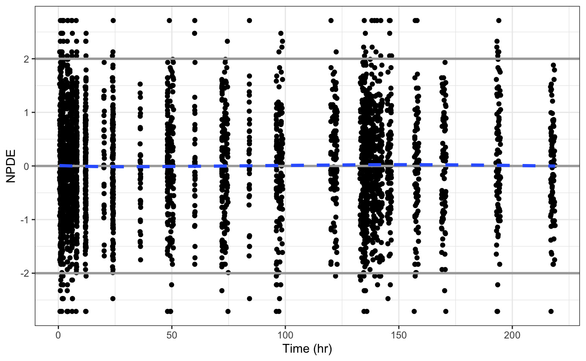
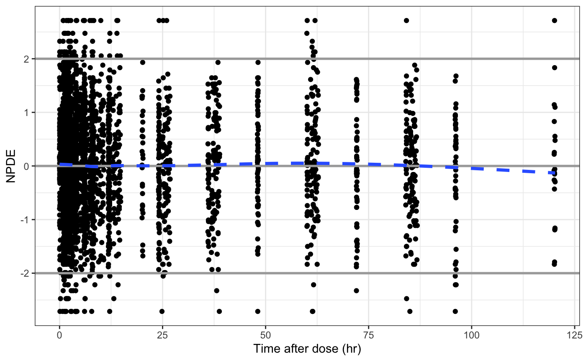
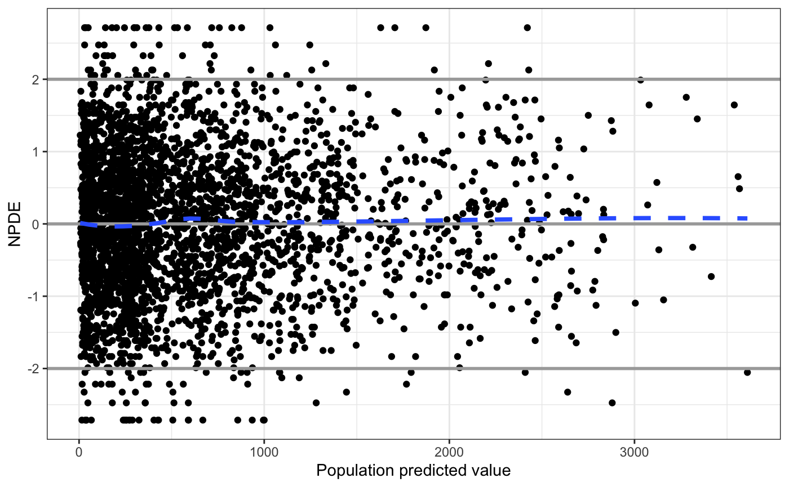
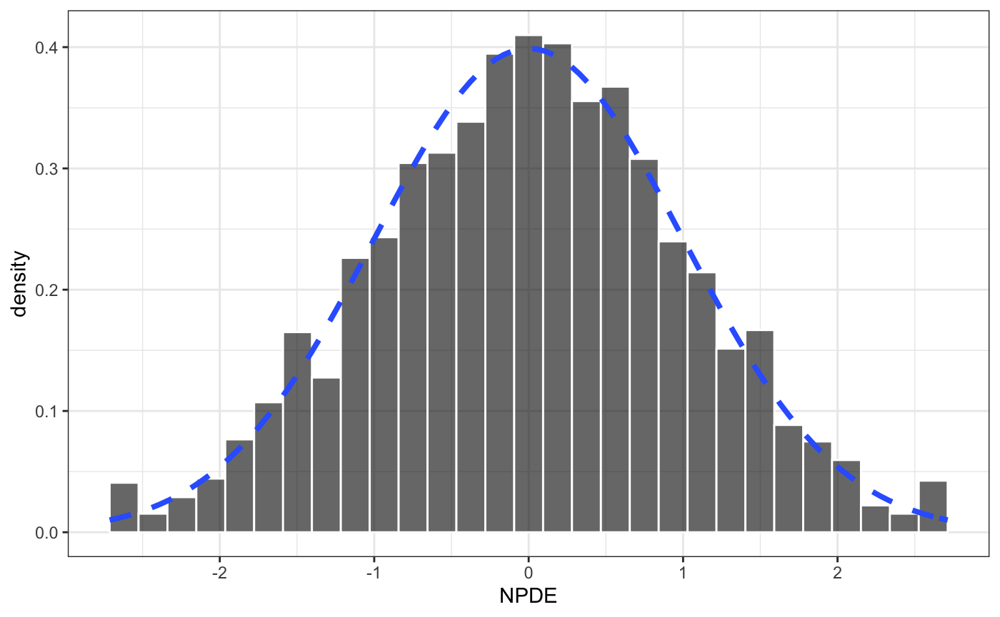
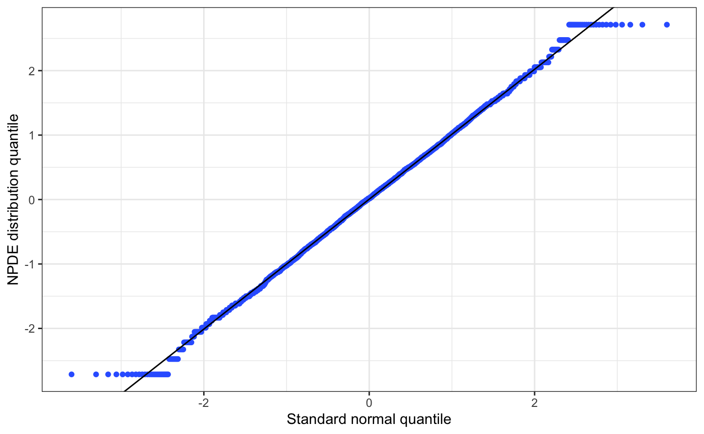
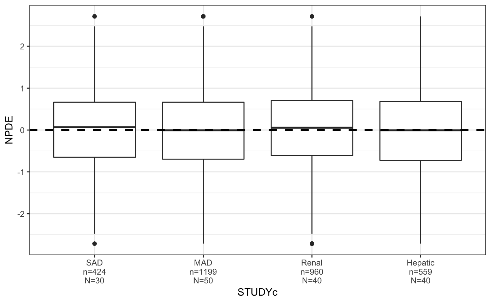
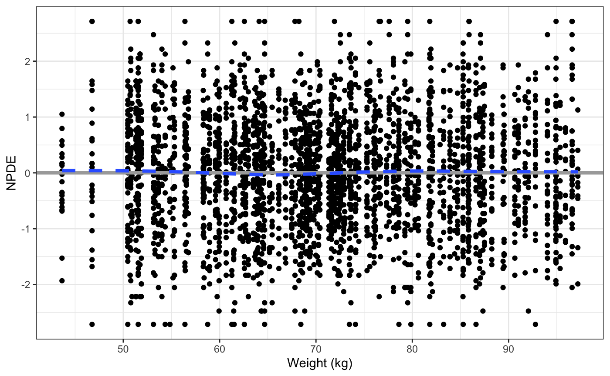

npde_plots.Rmd
library(pmplots) library(dplyr) data <- pmplots_data_obs()
npde_time(data)

npde_tad(data)

npde_pred(data)

npde_hist(data)
## `stat_bin()` using `bins = 30`. Pick better value with `binwidth`.

npde_q(data)

cont_cat(data, x = "STUDYc", y = "NPDE") + pm_hline()

cont_cont(data, x= "WT//Weight (kg)", y = "NPDE") + pm_hline() + pm_smooth()
